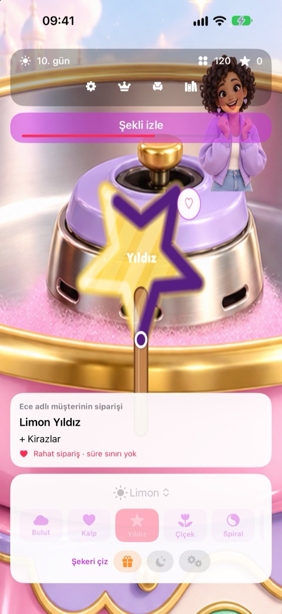
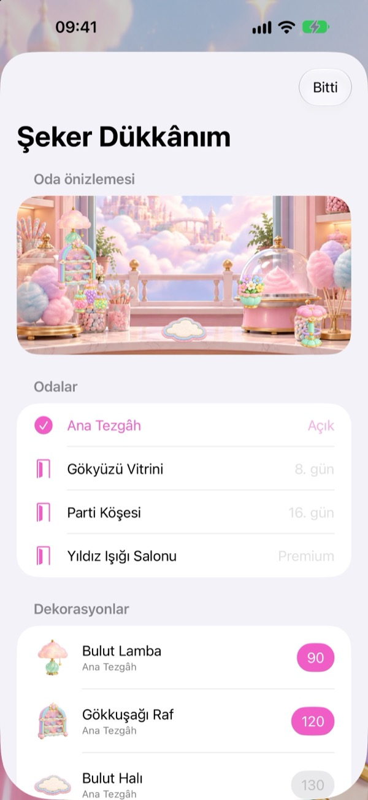
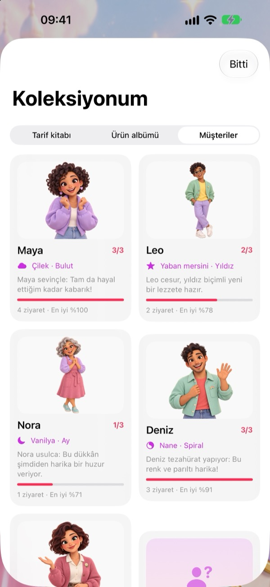

Şekil ver, süsle, gülümset.
8 lezzet, 10 şekil ve rengârenk süslerle yeni tarifler keşfet.
Renkleri karıştır, yumuşacık pamuk şekerlere şekil ver ve hayalindeki pastel dükkânı kur. Her sipariş, sana ait küçük bir eser.
Dükkâna göz at ↗
8 lezzet, 10 şekil ve rengârenk süslerle yeni tarifler keşfet.
Kazandığın oyun paralarıyla dekorlar seç, makinenin seviyesini yükselt.
Altı müşterinin favorilerini öğren; tasarımlarını albümünde biriktir.


Çocuklar için hazırlanan sürümde reklam ve üçüncü taraf takip SDK’ları bulunmaz. Satın almalar, dış bağlantılar ve paylaşım ebeveyn kontrolü arkasındadır.
Premium isteğe bağlı, yıllık ve otomatik yenilenen bir aboneliktir. Aktifken günlük ödülleri ikiye katlar, Starlight Lounge ve dekorlarını açar. Ücretsiz oyun da reklamsızdır.
Gizlilik politikamızı oku →